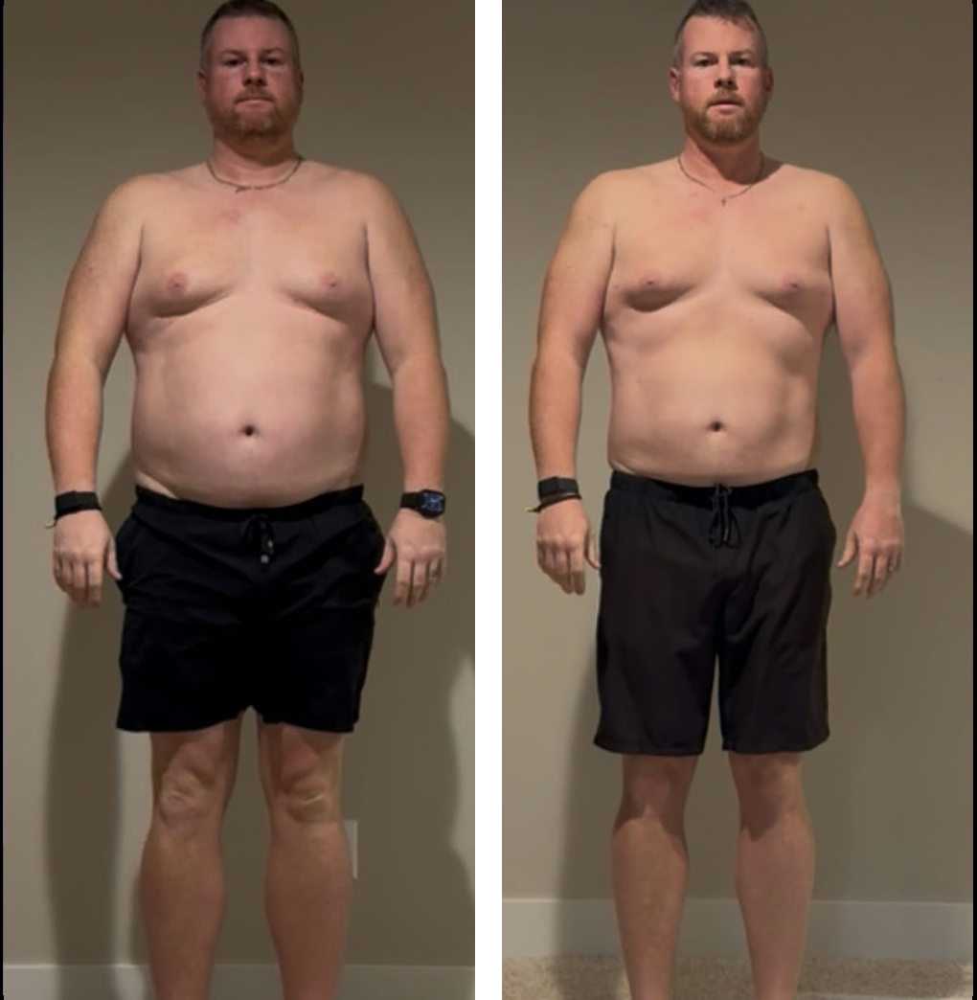

His doctor told him he was fine. He was a year from a diabetes diagnosis and didn’t know it.
Dustin is 41, 6’3”, married with six kids, and the founder of a large construction business in Indiana. He had built the company by outworking everyone. The one thing he never put on the schedule was himself.
“I’ve always been a bigger guy. I carry it well. But you turn sideways, the gut is growing.” The workouts stopped working. “When I go work out, I’m tired, I’m sore, I’m not recovering.” And it was leaking into the parts of his life that mattered most.
“A kid’s acting up, and it’s quick from ‘hey, what are you doing’ to angrily yelling at a child that shouldn’t have gotten yelled at. Same with my wife. I consider myself a patient person. Then I have regret. That’s not who I am.”
Work was slipping too. “I find myself delaying tasks, putting it off to the last minute. I’ll just sit and stare at the computer.” He rated his daily energy a 5 out of 10, his focus a 4. “I’m doing it for my family. I need to be healthy to be there for them.”
We ran more than 1,000 biomarkers. The metabolic picture was not “fine.” His triglycerides were nearly off the chart. His insulin resistance was severe. His testosterone was suppressed. This was a man on a fast track to diabetes and heart disease, and his standard physical had called it normal.
The metabolic numbers were the smoke. The fire was in his gut. His calprotectin came back at 124, more than double the ceiling, the marker of active gut inflammation. His intestinal barrier was leaking. His microbiome diversity was low, with the exact bacterial signature linked to obesity and almost none of the beneficial strains.
His IgG panel flagged 26 reactive foods, including every form of cow’s dairy and his daily coffee. His vitamin D was deficient. His Omega-3 Index sat at 3.49%, in cardiac-risk territory, and his AA/EPA ratio was eight times the upper limit, a sign of body-wide inflammation. He also carries a homozygous MTHFR mutation, which means the generic supplements he’d tried for years literally couldn’t work for him.
Here is the chain his physical never connected: the gut inflammation drove systemic inflammation. The inflammation drove insulin resistance. The insulin resistance stored fat and suppressed his testosterone. The low testosterone and visceral fat drove the fatigue, the poor recovery, and the short fuse at home. The behavior got blamed on his character. It was his biology.
Nutrition. We pulled all 26 inflammatory foods and built a macro plan around his labs, designed for a founder with six kids, not a meal-prep marathon.
Supplements. Methylated B vitamins for the MTHFR, vitamin D with K2, high-dose omega-3s to fix the index, and a gut-repair stack of the strains his microbiome was missing.
Training. Three to four sessions a week in his home gym, built around his recovery, not against it.
Peptides. Retatrutide for fat loss and insulin sensitivity, with BPC-157 and TB-500 added later to calm the inflammation. And a coach beside him the whole way.
Every number below moved in three months. Same man, 90 days apart.

hs-CRP started at 5.6 mg/L and liver enzymes (ALT 68) were elevated. Both dropped by about half.
“I would not have thought it’s even possible to lose that much that quick. I feel stronger. I can move better. My face is so much thinner. I can pull my pants up and off without ever unbuttoning them.”
The habits changed with the biology. “All of the bad habits I used to have are pretty much gone. I’ve had zero cravings for any alcohol.”
“Truly a life-changing journey that you are not just leading me through, but walking beside me in.”